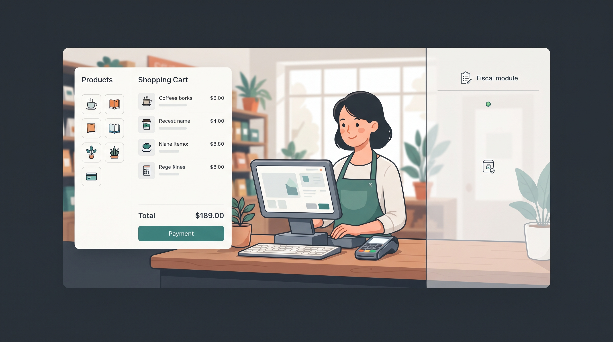

PDVs honestos para pequenos negócios: começar simples e crescer sem promessa vazia
No começo do negócio, cada gasto tem razão,
cada clique no balcão precisa ajudar na operação.
Não se vende maravilha, nem promessa sem medida:
entrega-se o que funciona para sustentar a vida.
E quando a loja crescer, com clareza e direção,
o sistema cresce junto, sem trair sua missão.
Para um pequeno negócio, honestidade não é apenas uma qualidade comercial. É uma decisão de arquitetura: entregar um fluxo confiável agora, declarar os limites com precisão e reservar a complexidade fiscal para o momento e o plano em que ela possa ser sustentada.
- Começo responsável: o plano Free permite testar o fluxo real do caixa sem mensalidade e sem emissão fiscal.
- Limite claro: fiscal simulado serve para treino e demonstração; não deve ser apresentado como autorização fiscal.
- Evolução natural: a emissão fiscal real pertence ao plano Premium ou à edição contratada, com credenciais, suporte e responsabilidade definidos.
- Valor para o pequeno negócio: operação local, simplicidade e redução de custos precisam vir antes de qualquer promessa de complexidade.
1. O que um pequeno negócio realmente precisa no começo?
Quando uma loja começa, o orçamento é curto e a atenção do proprietário está dividida entre compras, atendimento, estoque, fornecedores e fluxo de caixa. O software precisa ajudar a organizar a operação, não criar uma nova fonte de ansiedade.
Nesse contexto, um bom PDV inicial precisa responder perguntas simples: consigo registrar uma venda? Consigo consultar o total? Consigo continuar trabalhando se a internet oscilar? Consigo entender o relatório no fim do dia? O operador aprende o caminho sem fazer um curso de tecnologia?
A resposta não precisa começar com uma plataforma gigantesca. Ela precisa começar com um fluxo confiável, legível e proporcional ao tamanho da operação.
2. Honestidade começa por dizer o que não está incluído
Um produto é mais confiável quando seus limites aparecem antes da contratação, e não depois do primeiro problema. O PDV Free pode ser apresentado como uma experiência real de operação local: o cliente instala, cadastra produtos, registra vendas e entende o caminho do caixa.
Ao mesmo tempo, o plano precisa declarar que não inclui PIX integrado, emissão de NF-e ou NFC-e e outras capacidades que dependem de credenciais, regras fiscais, infraestrutura e suporte especializado. Essa clareza não diminui o produto. Ela impede que uma degustação seja confundida com uma solução fiscal completa.
Uma promessa que cabe no balcão
O Free entrega um fluxo de venda local para o cliente experimentar com baixo risco.
Ele não promete resolver, no mesmo pacote, toda a operação fiscal do negócio.
3. Fiscal simulado não é fiscal em homologação
Existe uma diferença importante entre simular um fluxo e operar em um ambiente de homologação. A simulação ajuda o operador a treinar o processo: selecionar uma forma de pagamento, conferir o total e concluir uma venda de teste. Ela é útil porque ensina o caminho sem criar uma falsa sensação de validade fiscal.
Já a homologação é um ambiente técnico de testes. Ela não transforma automaticamente uma venda em documento fiscal válido, não substitui a produção e não resolve as responsabilidades de uma operação comercial real. Por isso, vender “SEFAZ sempre em homologação” como benefício para o pequeno comerciante seria uma promessa confusa.
O cliente não precisa de um quase-fiscal. Ele precisa saber se está usando um fluxo de treinamento, uma operação sem emissão fiscal ou uma solução fiscal contratada e configurada para o seu caso.
4. A complexidade fiscal deve entrar pela porta certa
Emissão fiscal real pode ser necessária para determinados negócios, mas ela traz responsabilidades que não devem ser escondidas dentro do fluxo do caixa. Certificados, credenciais, regras estaduais, rejeições, contingência, indisponibilidade de serviço e alinhamento com a contabilidade fazem parte desse domínio.
Isso não significa que um PDV não possa oferecer essa capacidade. Significa que ela precisa entrar pela porta certa: um plano Premium ou uma edição completa, com contratação adequada, implantação, suporte e comunicação precisa sobre o que está sendo assumido.
- Free: operação de venda e treinamento, sem emissão fiscal real.
- Premium: recursos ampliados, inclusive emissão fiscal quando aplicável ao contrato e à configuração do cliente.
- Responsabilidade: o operador sabe o que fazer no balcão e o negócio sabe quem sustenta a camada fiscal.
5. Rust e Java: duas formas de respeitar o mesmo balcão
As linhas Rust e Java podem ter arquiteturas diferentes, mas partem da mesma preocupação: manter a operação do balcão compreensível, local e resiliente. O piloto Rust pode atender quem precisa de uma instalação leve no Windows e quer experimentar o fluxo com pouca infraestrutura. O PDV Java pode atender uma operação madura que precisa de maior abrangência e evolução controlada.
A diferença de tecnologia não precisa virar uma diferença de honestidade. Em ambos os casos, a comunicação deve separar o que é venda, o que é treinamento e o que é emissão fiscal real. O cliente não deveria precisar conhecer Rust, Java, SQLite ou filas para entender qual produto está contratando.
| Pergunta do cliente | Resposta honesta |
|---|---|
| Posso testar o caixa? | Sim, com o plano Free e seus limites declarados. |
| A venda de teste tem validade fiscal? | Não. O fluxo simulado é treinamento, não documento fiscal. |
| E quando eu precisar emitir? | A migração ocorre para o plano ou edição com fiscal real, contrato e suporte adequados. |
| Preciso trocar de produto? | A evolução deve ser planejada para preservar dados, operação e aprendizado do cliente. |
6. Viabilidade financeira também é uma decisão técnica
Um pequeno negócio não avalia apenas o preço da licença. Ele avalia o custo total de manter o caixa funcionando: bobinas, impressora térmica, manutenção, computador, internet, treinamento, suporte e tempo perdido quando o sistema trava.
Um PDV local e offline-first pode reduzir dependências e manter o trabalho em andamento quando a conexão oscila. Um recibo digital pode diminuir o consumo de papel. Uma interface objetiva reduz o tempo de treinamento. Esses benefícios são concretos porque aparecem na rotina, e não apenas em uma apresentação comercial.
A mensalidade de um plano completo só faz sentido quando o valor entregue é percebido e quando as responsabilidades estão claras. A honestidade comercial, nesse caso, é também uma forma de FinOps: não empurrar para uma pequena empresa uma estrutura que ela ainda não precisa ou não consegue sustentar.
7. Crescer sem abandonar a promessa inicial
A melhor evolução é aquela que não obriga o cliente a reaprender tudo quando o negócio cresce. O operador começa com um fluxo curto, aprende onde ficam os produtos, entende o total e fecha o dia com segurança. Mais tarde, a operação pode receber PIX integrado, emissão fiscal e suporte ampliado sem transformar o caixa em um painel incompreensível.
Isso exige uma fronteira arquitetural clara. O domínio da venda deve continuar simples mesmo quando o domínio fiscal ficar mais sofisticado. O operador não precisa carregar no balcão todos os detalhes das regras tributárias, mas o produto também não pode fingir que eles não existem.
Crescimento sustentável é adicionar capacidade sem adulterar a promessa: o caixa continua sendo um lugar objetivo para trabalhar.
Conclusão: começar pequeno também pode ser uma escolha de longo prazo
Os PDVs da Cara Core Informática podem ser honestos e viáveis para pequenos negócios quando a oferta mantém uma separação cristalina entre experimentar, operar e emitir fiscalmente. O Free não precisa fingir que é uma solução completa. O Premium não precisa esconder que fiscal exige contrato, suporte e responsabilidade.
Essa clareza protege o cliente e protege o produto. O comerciante sabe onde está começando, quanto está pagando, o que pode fazer hoje e qual é o próximo degrau quando a operação crescer.
Um PDV honesto não promete salvar o negócio sozinho. Ele ajuda o negócio a trabalhar melhor, respeita sua realidade e cresce apenas quando existe valor para sustentar o próximo passo.
Dicionário de Termos Técnicos
Para facilitar a leitura, organizamos os conceitos utilizados no artigo:
- Offline-first: estratégia em que a operação principal continua funcionando localmente mesmo quando a internet está indisponível ou instável.
- Homologação: ambiente de testes usado para validar integrações e comportamentos antes de uma operação em produção.
- Emissão fiscal: geração e transmissão de documentos fiscais conforme regras, credenciais e responsabilidades aplicáveis ao negócio.
- Fiscal simulado: fluxo de treinamento que imita etapas de uma venda fiscal sem produzir um documento fiscal válido.
- PDV: ponto de venda, conjunto de software e procedimentos usados para registrar vendas e apoiar a operação do caixa.
Hashtags
Contato
- E-mail: suporte@caracore.com.br
- Site Institucional: www.caracore.com.br
- PDV Java: Página e Releases do PDV Java
- PDV Rust: Página do Piloto PDV Rust
- LinkedIn: Cara Core Informática
Conheça as linhas de PDV da Cara Core Informática e escolha o caminho adequado ao momento da sua operação.
Conhecer o PDV Java Conhecer o PDV Rust
Artigo publicado em 05 de junho de 2027
© 2027 Cara Core Informática. Todos os direitos reservados.